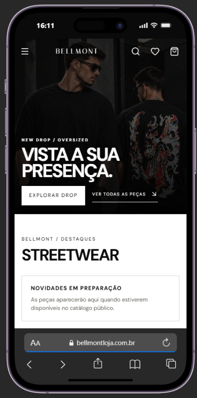

Campanha
A proposta visual apresenta o drop e cria uma conexão imediata com o universo streetwear da Bellmont.
Landing page responsiva para apresentar o novo drop da Bellmont com narrativa visual, chamadas de coleção e caminho direto para a loja.
A proposta visual apresenta o drop e cria uma conexão imediata com o universo streetwear da Bellmont.
Tipografia de impacto, contraste e fotografia editorial sustentam uma mensagem direta e memorável.
CTAs visíveis conduzem para explorar o drop ou acessar toda a coleção.

O hero coloca a campanha no centro e oferece caminhos imediatos para explorar o drop ou ver as peças.

No mobile, a campanha mantém sua identidade visual e reorganiza as ações para uma navegação confortável por toque.

O fluxo conecta a comunicação do drop com botões para explorar a coleção e seguir para a loja completa.
Quer lançar sua marca ou coleção com uma landing page forte?
Entrar em contato